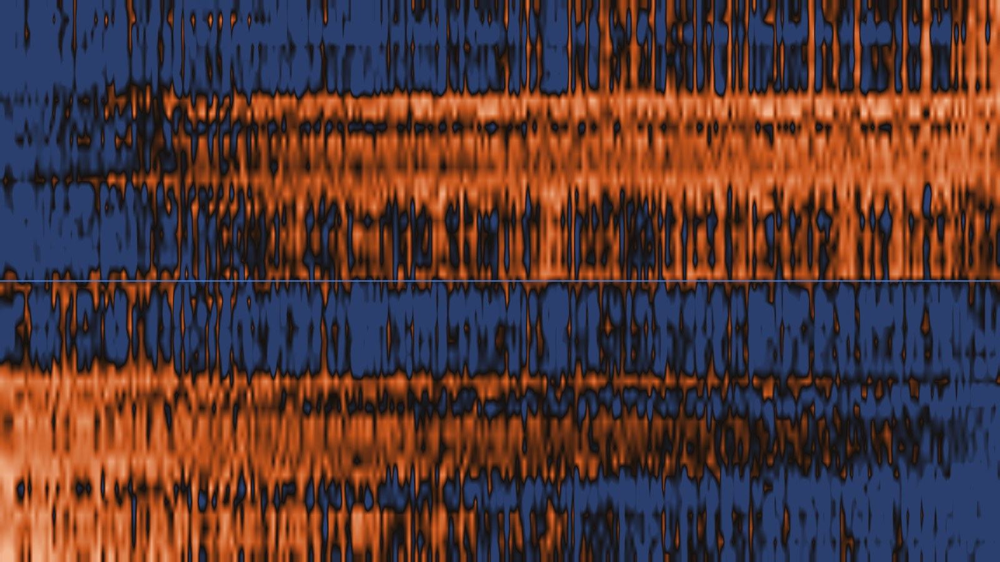
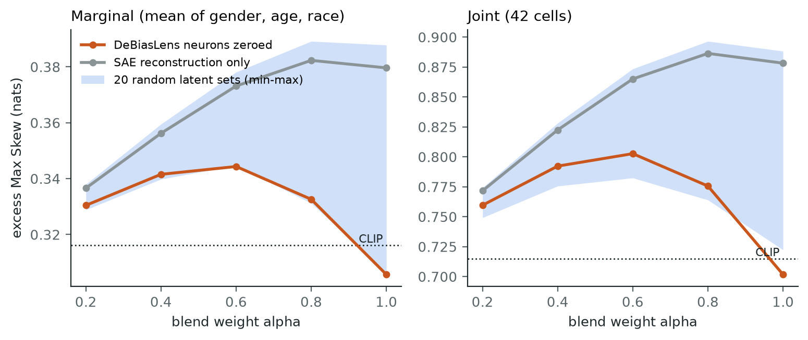
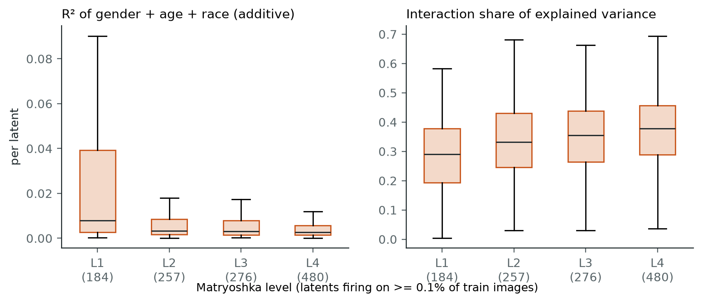
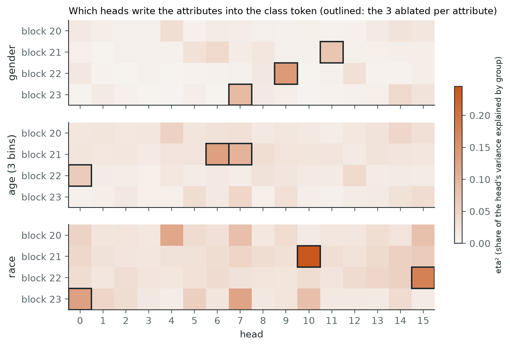
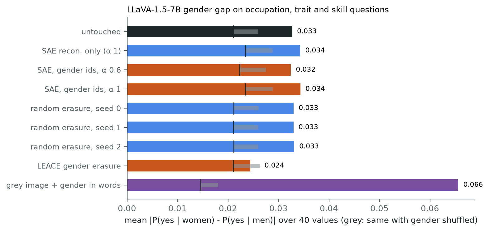

← Research·Experiments·
Do SAE features capture intersectional bias in vision-language models?
CLIP's image search over faces is more skewed across the 42 combinations of perceived gender, age and race than across any single attribute, but almost all of that is the three attributes compounding, and the SAE behind DeBiasLens has hardly any features for the combinations. Its published edit raises skew instead of lowering it, as any lossy rebuild of the class token does, and in LLaVA it never reaches the language model.

results/prompt_metrics_core.npz; no images are shown.Summary: the short answer and the key results
In short
Do the SAE features that DeBiasLens switches off capture intersectional bias in CLIP?
No. The released SAE has a feature for 1 of the 42 gender × age × race groups, and there is little intersection-specific skew for it to capture: CLIP's joint-group skew is what the three attributes predict when they compound. The published edit raises skew, because it swaps 60% of the class token for a lossy rebuild of it. Removing the same features while keeping everything else cuts gender and race skew beyond random features, but most of its cut to joint skew is matched by removing any features of the same size. In LLaVA-1.5-7B the released edit never reaches the language model, and naming the gender in words moves its answers more than the photo does.
Key results
| Question | Answer |
|---|---|
| Is CLIP's skew mainly in the intersections? | No, it compounds. Excess skew over the 42 joint groups is 0.715 [0.685, 0.746] nats, above race (0.467) and every other single attribute, but an independence model built from each prompt's own gender, age and race counts predicts 0.708; the part specific to combinations is 0.007 [−0.006, 0.019]. Random directions in the embedding space score 0.765: any query retrieves faces this unevenly. |
| Does the published DeBiasLens edit reduce skew? | No, at the paper's setting it raises it. Joint excess +0.088 [0.072, 0.103]; the paper's metric is level (0.640 against 0.636); 16 of 42 groups get worse. The SAE rebuild alone raises joint excess by 0.150, and a PCA rebuild that loses as much of the class token (86%) raises it by 0.244: the blend with a lossy rebuild is what hurts. |
| Do the SAE's social features carry the bias? | Partly (exploratory). Removing the same 13 latents while keeping the SAE's error cuts gender Max Skew from 0.247 to 0.185 and race from 0.571 to 0.453, beyond 20 random latent sets matched on how much they remove (gender beats all 20, race 19). Its joint cut, −0.144 [−0.167, −0.121], is matched or beaten by 6 of those 20 sets. |
| Are there features for the intersections? | Hardly. The paper's rule finds a candidate for 1 group at τ = 0.9; 2 of 52 latents found at any τ are mostly interaction. Fine Matryoshka levels are slightly more interaction-heavy (median share 0.38 against 0.29). |
| Are there better handles than generic neurons? | Yes, several. Prompt-specific latents cut joint excess by 0.205 more than DeBiasLens; nine attention heads cut it by 0.115 with ImageNette at 0.996; a text-side projection cuts the paper metric from 0.636 to 0.514. LEACE does most (−0.390) but cuts marginal skew more than joint (70% against 55%). |
| And in LLaVA? | The released edit never reaches the language model (LLaVA-1.5 reads vision block 22; the edit is on block 23; answers are identical on 384 questions). Erasing gender where LLaVA reads takes the photo's gender gap from 0.033 to 0.024, near its shuffled-label floor of 0.021, at 0.5 MME points. A grey image with the gender named in words gives 0.066, 2.0× [1.83, 2.64] the photo's. |
| Predictions | 11 of 17 pre-registered predictions hit. |
01Introduction
Ask CLIP for "a photo of a nurse" among 10,954 face photos and keep the top 1,000. Counted by gender alone, the result looks only mildly skewed. Counted by gender, age and race together, across the 858 prompts we tried, some groups, such as girls under 20 labelled Black, appear at about a fifth of their share of the pool, while men aged 20-39 labelled East Asian appear at twice theirs. A fix tuned to look balanced on each attribute separately can leave those groups where they were; fairness research calls that gerrymandering. Whether such groups need features of their own depends on whether their skew is more than the separate attributes compounding, which is the first thing we measure.
What is known. DeBiasLens (CVPR 2026) trains sparse autoencoders on a vision encoder's last layer without labels, uses face labels only to pick one "social neuron" per group, and switches those neurons off at inference. It reports lower retrieval skew for CLIP, a smaller gender gap in LLaVA-1.5 and InternVL2, and a random-neuron comparison, and it names intersectional bias and moving beyond single neurons as next steps. Its checkpoints and code are public, which is what made this study possible.
What is missing. The paper reports each attribute separately, without seeds or intervals, and without separating the effect of zeroing neurons from the effect of passing the embedding through the SAE.
What this note does. We take the released ViT-L/14-336 checkpoint, apply the paper's selection rule and edit exactly, and measure skew over the 42 joint groups beside the single attributes, with frequency-matched random latents, the SAE reconstruction alone, a linear erasure (LEACE), probes and ImageNette as controls. Then we look for better handles inside CLIP (prompt-specific latents, attention heads, the text side) and carry the question into LLaVA-1.5-7B. Contributions:
- An intersectional audit of CLIP retrieval: joint skew is larger than any single attribute's, but an independence model of the attributes predicts it, and random query directions show as much.
- A replication with controls: the published edit does not reduce skew with the released checkpoint, and a non-SAE rebuild of the same quality shows why; removing the same latents without the rebuild reduces gender and race skew beyond matched random latents.
- A negative result on conjunction features, and a measurement of where demographic signal sits across the Matryoshka levels.
- Three pathway comparisons (attribution, heads, text side) under the same controls.
- A LLaVA check: the released attachment point is never read, and the language model's own prior is the larger source of gender skew on these questions.
02Setup
Model and SAE. CLIP ViT-L/14-336 (openai/clip-vit-large-patch14-336) and the released Matryoshka batch-top-k SAE trained on FairFace activations at the output of the vision tower's last block (block 23): 8,192 latents (expansion 8), k = 20, the checkpoint the released evaluation loads (ae_100000.pt). Only the class-token (CLS) row of that block reaches the image embedding, so we edit the CLS residual directly; the edit is exact, not an approximation. We wrote our own small loader from the released code's architecture and did not run the released pipeline.
The DeBiasLens edit. Encode the residual, set the chosen latents to 0, decode, and blend: h′ = 0.4 h + 0.6 decode(…) (blend weight α = 0.6, the paper's default). A latent is chosen for a group with the paper's rule, on the train split: it fires on at least τ = 0.9 of that group's images and on fewer than τ of every other group's; among the candidates, the one with the highest mean activation on the group wins. Groups are the paper's: gender (2), age (7 bins, 3-9 to 60-69) and race (7).
On the 86,744 train images the rule found both gender latents at τ = 0.9 (one also fires on 85% of men, so it barely separates them), but only 1 of 7 age groups and 1 of 7 race groups at 0.9. Stepping τ down for the rest, as the plan fixed in advance, gave 4 age latents (three age groups have no candidate at any τ) and 7 race latents: 13 in all, 9 of them in the first Matryoshka level. Only one matches the released ids (race latent 6). The released gender latent 98 hardly separates anything on the class token (it ranks 6,489th of 8,192 by firing gap); we run the released ids as their own arm. On the class-token row of the 10,954 val images, the SAE's reconstruction leaves 86% of the variance unexplained (FVU 0.861; cosine 0.84 between the embeddings it gives and CLIP's), against 19% on block-23 tokens in general. It was trained on two random tokens per image, almost all of them image patches.
Prompts and measures.
| Prompt set | What | Prompts | Top K | Used in |
|---|---|---|---|---|
| Adjectives | 12 templates × 29 words ("This person is good") | 348 | 1,000 | all CLIP sections |
| Occupations | 7 templates × 41 jobs ("This is a photo of a nurse") | 287 | 1,000 | all CLIP sections; cover |
| Activities | 6 templates × 33 hobbies | 198 | 1,000 | all CLIP sections |
| Stereotypes | "A photo of a {criminal, thief, …}", 25 words | 25 | 500 | all CLIP sections |
| VLA questions | 20 occupations, 10 traits, 10 skills, one yes/no question each, on 400 photos | 16,000 | – | LLaVA |
The first four are the released evaluation's prompt files (prompts.json); the VLA questions are the test split of the VLA gender-bias benchmark. Terms used throughout:
- Paper Max Skew: the released metric, the most over-represented group's log share against an equal split (1/2, 1/7, …).
- Skew of a group: the log of its share of the top K over its share of the 10,954 images (smoothed by 0.5 counts). Max Skew is the largest over groups.
- Excess skew: Max Skew minus what a random top K gives (200 random draws). It matters because the largest of 42 small cells is large by chance alone.
- Marginal skew: the mean excess over gender, age (3 bins: 0-19, 20-39, 40+) and race. Joint skew: the excess over the 42 cells.
- Leakage: the accuracy of a linear probe that predicts perceived gender (or age, race) from the edited embedding, trained on 10,000 train images and tested on val.
- Ability: zero-shot accuracy on ImageNette (3,535 val photos, 10 classes).
What counts as success. A latent-level edit "captures" a bias if (1) it lowers skew more than 20 random latent sets matched on how often they fire; (2) the drop is not just the blend with a lossy reconstruction (the reconstruction alone, nothing zeroed, runs beside it); (3) it does not leave other cells worse; (4) it keeps ImageNette accuracy; and (5) in a downstream model, it changes what that model says.
03How the study was run
- Read the released code (not run) for the SAE, the attachment, the selection rule's inputs, the metric and the LLaVA wrapper; wrote the plan with 17 predictions and committed it before any code ran.
- Cached CLIP's block-23 class-token residual for 86,744 train, 10,954 val and 3,535 ImageNette images (one A10G, 87 minutes), with the exact per-head contributions of blocks 20-23 for 24,489 of them and token statistics for LEACE in LLaVA.
- Pilots on 384 images per split checked the plumbing: the head decomposition rebuilds the residual to 1e-4, and the embedding rebuilt from the cached residual matches CLIP's exactly.
- Ran every CLIP arm on the cache: 25 named arms and 160 random-latent draws over 858 prompts; 20 random latents per conjunction feature (23 groups), 20 random head sets, and 20 per-prompt random draws for the attribution arm.
- Ran LLaVA-1.5-7B on 16,000 questions per arm in 9 arms, plus 384-question identity checks and 2,374 MME questions in 5 arms (one A100, 2.5 hours).
- Scored the predictions with a scorer committed before the full results were read.
- Added one exploratory arm after reading the results (latents removed with the SAE error kept), labelled wherever it appears.
- An independent code and statistics review then found two bugs, fixed and rerun: the conjunction-feature random controls could draw other selected latents (this changed P6), and the B3 over-retrieved group was chosen on val. It also asked for four checks, added as exploratory: an independence model of the attributes, random directions and object prompts as queries, a PCA rebuild with the SAE's loss, and random latents matched on contribution.
| Fixed before any full run | Changed or added later |
|---|---|
| Data, groups, prompts, top K, metrics and the excess-over-random definition, the selection rule and its τ fallback, every arm, α values, 20 random draws, bootstrap units, 17 predictions and thresholds | Before the pilot: the prompt count corrected from 425 to 858 (the files hold 12, 7 and 6 templates). After the LLaVA pilot, before the full run: two identity controls (the same rows rerun untouched; block 23's output replaced by zeros) and identity rows set to a multiple of the batch size. After the results: the error-kept arm and the shuffled-gender floor for LLaVA. After the code review: the four checks above, basic (not percentile) bootstrap intervals for LLaVA's gaps, and MME intervals over images. All exploratory. |
| Leakage probes trained on 20,000 train images | Trained on the fixed 10,000-image subset that also has head contributions, so every arm uses the same rows. |
| ImageNette val, 3,925 images | The file served today has 3,535 images; all of them were used. |
Conditions: CLIP in fp32 without TF32; the SAE in fp32; LLaVA in fp16 with next-token probabilities at the answer letter, batch 32, no sampling. Intervals are 95% bootstraps with 10,000 resamples: over the 128 prompt concepts (each with all its templates) for skew, which holds the 10,954 images fixed; over images for accuracies, probes and the per-group changes, which holds the prompts fixed; over images (with all their questions) for LLaVA.
Checks on the rulers, with bars set in advance:
- Our metric reproduces the paper's CLIP baseline (gender, Max Skew × 100, adjectives / occupations / activities / stereotypes): 22.3 / 33.4 / 23.3 / 33.7 against the paper's 19.9 / 31.5 / 23.2 / 30.0. Three of four sets are within the 0.03 bar; stereotypes (25 prompts) is 0.037 off.
- Head decomposition: relative error 9.4e-5 (fp16 storage of head outputs). Embedding rebuilt from the residual: exact.
- LEACE leaves its own probe near chance: gender 0.56 (two groups), age 0.54 (three groups), race 0.23 (seven groups), against 0.95, 0.83 and 0.68 before.
- LLaVA: greedy generation's first token equals our next-token read on 20 of 20 prompts; the two answer letters carry 0.90 of the probability on average.
04Results: intersectional bias and the SAE edit
CLIP's joint skew is the attributes compounding, and any direction shows it
Figure 1 shows CLIP's excess skew: each grouping's Max Skew minus what a random top 1,000 gives. Joint skew over the 42 groups is 0.715 nats, above race (0.467), age (0.257) and gender (0.225). Part of any joint number is mechanical, since the largest of 42 small groups is large by chance; that part is removed, because a random top 1,000 scores 0.416 on the joint groups and the excess is measured above it.
The rest is mostly the attributes compounding. If a prompt over-retrieves men and over-retrieves people aged 20-39, it over-retrieves men aged 20-39 by roughly the product. For each prompt we built the joint retrieval that an independence model gives from that prompt's own gender, age and race counts (iterative proportional fitting from the pool's make-up), and sampled it 1,000 images at a time like the real search. It predicts a joint excess of 0.708; the part specific to combinations is 0.007 [−0.006, 0.019] nats. The registered test of non-additivity (P2) compared an additive model's misfit with its misfit on unskewed retrievals and read 4.0×; against additive data with the same marginals, the ratio is 1.6, the same as for object prompts (1.6) and below random directions (2.1). We added these checks after an independent review; they are exploratory.
The second caveat applies to every skew number on this page. Two hundred random directions in CLIP's embedding space, used as queries, score a joint excess of 0.765 and a marginal excess of 0.341, more than the 858 real prompts (0.715 and 0.316); ten object prompts such as "a photo of a golf ball" score 0.30 to 0.88. Face photos sit in clusters by perceived gender, age and race, so any query retrieves them unevenly. This measure mixes what a prompt adds with the layout of the faces. The comparisons between edits below are paired over the same prompts and images, so the layout cancels in them.

The interactive map below shows each group's mean skew for every prompt set and edit. In CLIP, groups of children and older people labelled Black, Indian or Middle Eastern are under-retrieved for almost every prompt set, and young adult men labelled East Asian or Southeast Asian are over-retrieved. These are statistics over FairFace's annotated labels, not statements about anyone. Each value is the mean over prompts of a log ratio, so a group retrieved unevenly from prompt to prompt averages below zero even when its average share is right; compare values across edits rather than reading one alone.
Edit
Prompt set
Hover or focus a cell for its group and value.
The published edit raises skew, because the SAE rebuilds the class token poorly
Table 1 and Figure 2 put the DeBiasLens edit beside its controls. At the paper's blend weight (α = 0.6), zeroing the 13 selected latents leaves the paper's metric level with plain CLIP (0.640 against 0.636) and raises joint excess by 0.088 [0.072, 0.103]. The released neuron ids do worse (+0.120). The reconstruction alone, with nothing zeroed, raises joint excess by 0.150. So the edit's net effect is the zeroing, which helps relative to the reconstruction, on top of the blend, which hurts more.
The paper reports image-side Max Skew for gender falling from 31.5 to 20.4 on occupations. With the released checkpoint we measure 33.4 for CLIP, 32.9 with the selected gender latents zeroed at α = 0.6, and 38.1 with the released gender ids. We could not reproduce the reduction. Our CLIP baseline matches the paper's within 0.04 on every prompt set, so the difference lies in the edit. The checkpoint, attachment and blend follow the released code, and the most direct explanation is the reconstruction gap above. A control that has nothing to do with the SAE supports it: rebuilding the class token from its top 3 principal components loses as much (FVU 0.87, against the SAE's 0.86), and blended at α = 0.6 it raises joint excess by 0.244 [0.229, 0.259], more than the SAE rebuild. A lossy rebuild keeps the coarse layout of the face embedding, where the demographic clusters are, and drops the detail that lets prompts tell faces apart. Raising α to 1.0 does lower skew a little (paper metric −0.069 [−0.083, −0.055]), but there the edit replaces the whole class token with the reconstruction, and ImageNette accuracy falls from 0.998 to 0.40.
| Edit | Paper metric | Gender (paper) | Marginal excess | Joint excess | ImageNette | Gender probe |
|---|---|---|---|---|---|---|
| CLIP, no edit | 0.636 | 0.266 | 0.316 | 0.715 | 0.998 | 0.954 |
| PCA rebuild, rank 3 (same loss), α 0.6* | 0.750 | 0.432 | 0.420 | 0.959 | 0.995 | – |
| SAE reconstruction only, α 0.6 | 0.678 | 0.314 | 0.373 | 0.865 | 0.993 | 0.951 |
| DeBiasLens, 13 selected latents, α 0.6 | 0.640 | 0.285 | 0.344 | 0.803 | 0.992 | 0.951 |
| DeBiasLens, released ids, α 0.6 | 0.665 | 0.311 | 0.364 | 0.835 | 0.993 | 0.952 |
| 20 random latent sets, α 0.6 (range) | – | – | 0.333–0.378 | 0.782–0.873 | 0.992–0.995 | 0.95 |
| DeBiasLens, 13 selected latents, α 1.0 | 0.567 | 0.268 | 0.306 | 0.702 | 0.400 | 0.914 |
| Same 13 latents removed, SAE error kept* | 0.563 | 0.207 | 0.246 | 0.571 | 0.998 | 0.948 |
| LEACE, gender + age + race | 0.367 | 0.050 | 0.094 | 0.325 | 0.998 | 0.532 |
* Exploratory, added after the registered results.

Per group (Figure 3), the edit makes 16 of the 42 groups worse and 3 better (95% image-bootstrap intervals); the reconstruction alone makes 30 worse, and so does a random latent set (31). The groups hurt most are among the already under-retrieved: groups labelled Black, in every age band.

Removed without the rebuild, the latents cut gender and race skew, partly generically (exploratory)
To separate the latents from the rebuild, we removed only the selected latents' contribution and kept everything else, including the SAE's error: h′ = h − Σ aj dj. We added this test after reading the registered results, so it is exploratory. Gender Max Skew falls from 0.247 to 0.185 and race from 0.571 to 0.453; joint excess falls by 0.144 [0.121, 0.167] and marginal by 0.070 [0.062, 0.079]; ImageNette stays at 0.998.
Two kinds of random control tell different stories. Against 20 random latent sets matched on how often each latent fires, every one of those cuts is far beyond the band (best joint cut −0.085). But the selected latents are among the most active on the class token, and removing any large component moves the embedding. Against 20 sets matched on each latent's mean contribution, the gender cut still beats all 20 (best −0.056) and the race cut beats 19 (best −0.125), but 6 of the 20 cut joint excess more (up to −0.187), and 14 cut the paper's metric more. So the features carry some specific gender and race signal; most of the drop in joint skew comes from removing that much of the class token. Marginal skew also falls slightly more than joint skew (22% against 20%; difference 0.020 [0.003, 0.038]). The released ids, removed the same way, do much less (joint −0.044).

The selected latents beat random latents but leave gender readable
Within the published edit, each attribute's latents do beat random latents on their own attribute (Max Skew at α 0.6, against the best of 20 frequency-matched sets): gender 0.253 against 0.287, age 0.427 against 0.437, race 0.559 against 0.611. None beats doing nothing (CLIP: 0.247, 0.401, 0.571). Nor do they remove the attribute: a linear probe still reads perceived gender from the edited embedding with 0.95 accuracy (Figure 5). LEACE, a closed-form linear erasure fitted on train, takes the probe to 0.56 and cuts gender Max Skew by 0.170, against −0.006 for the gender latents. The paper's view that no single linear direction separates the attribute does not hold for gender here: one linear erasure removes most of it.

LEACE on all three attributes is the strongest edit (joint −0.390, ImageNette 0.998), and it is the one that gerrymanders: it removes 70% of marginal excess but 55% of joint excess (difference 0.157 [0.133, 0.183]).
Almost no latents mark the intersections
We applied the paper's selection rule to the 42 joint groups: a latent counts for a group if it fires on at least τ of that group's images and on fewer than τ of every other group's.
| τ | Groups with a candidate | Latents found | Share mostly interaction (≥ 0.5) |
|---|---|---|---|
| 0.9 | 1 | 1 | 0.00 |
| 0.7 | 4 | 4 | 0.00 |
| 0.5 | 6 | 7 | 0.00 |
| 0.3 | 8 | 9 | 0.00 |
| 0.1 | 20 | 31 | 0.06 |
Over all τ, 2 of 52 latents (4%) are mostly interaction. The one found at τ = 0.9 (for women aged 40+ labelled Indian) also fires on 88% of another group. Most of the others are a single attribute in disguise: the latent picked for women aged 20-39 labelled Black fires on 62% of all images labelled Black. Zeroing each group's latent (α 0.6) lowers that group's skew more than all 20 frequency-matched random latents for 12 of 23 groups (the random pool excludes the other selected latents); zeroing all 23 together raises joint excess by 0.122, mostly through the rebuild.
Fine Matryoshka levels are a little more conjunctive
For the 1,197 latents that fire on at least 0.1% of train images, we measured how much of each latent's class-token activation the attributes explain (Figure 6). Coarse latents (the first 512) carry more additive demographic signal (median R² 0.0078 against 0.0027 in the finest level; difference [0.0025, 0.0087]), and fine latents have a larger interaction share (median 0.38 against 0.29; difference 0.088 [0.049, 0.113]). Among the 94 latents with real demographic signal (R² ≥ 0.05), the interaction share rises from 0.13 in level 1 to 0.34 in level 4. Every social latent the paper's rule picked sits in levels 1-2, and all are mostly additive (interaction share at most 0.27). The direction matches the idea that coarse levels hold attributes and fine levels their combinations, but the effect is small, and the SAE spends almost none of its 8,192 latents on demographic combinations.

05Results: other pathways inside CLIP
Prompt-specific latents beat the generic social neurons
The similarity gap between an over-retrieved group and the rest splits exactly into one term per SAE latent, through the frozen layer-norm scale and CLIP's projection. For each prompt we ranked latents by their share of the gap on train images, summed over gender, age and race, and zeroed the top 13 (the same number as DeBiasLens) inside the same α 0.6 blend. On val, joint excess falls by 0.118 [0.094, 0.142] against CLIP and by 0.205 [0.183, 0.228] against DeBiasLens, at ImageNette 0.994 (mean over 50 prompts' latent sets; DeBiasLens 0.992). Random latents matched to each prompt's picks score 0.866-0.873, above CLIP. The cost is more reordering within groups: the within-group rank correlation with CLIP is 0.80, against 0.85 for DeBiasLens. The attribution reuses 113 distinct latents across 858 prompts; 33% of its picks are DeBiasLens's own latents.
Nine attention heads do better than the SAE edit
The class token in CLIP's last layers is a sum of what each attention head and MLP writes into it. On 10,000 train images, we measured how much of each head's output in blocks 20-23 varies with each attribute (Figure 7), then replaced the top 3 heads per attribute (9 in all, every one in blocks 21-23) with their average output. Marginal excess falls by 0.042 [0.033, 0.050] and joint excess by 0.115 [0.096, 0.135], beyond 20 random sets of 9 heads (best marginal: −0.019). ImageNette stays at 0.996. The heads also beat DeBiasLens at α 1.0 on marginal excess, by 0.031 [0.019, 0.043]. Like the latents, they leave gender readable (probe 0.95): the information is spread across many writers.

The text side does most of the work, and the image edit adds to it only on the marginals
The paper found that editing both encoders was worse than editing the text side alone (on ViT-B/16). The released checkpoints include no ViT-L text SAE, so we used a standard text-side edit: projecting the directions of "A photo of a {male, young, Black, …} person" out of each prompt's embedding. It cuts the paper metric from 0.636 to 0.514. Adding the DeBiasLens image edit gives 0.493, slightly better than text alone (−0.021 [−0.027, −0.014]), but joint excess rises from 0.652 to 0.730 (+0.078 [0.061, 0.095]). When each prompt's similarity gap is split into an image term, a text term and their interaction, the interaction opposes the text term in 90% of prompts for gender and 96% for race. The two edits remove overlapping parts of the same gap, so their gains do not add.
06Results: LLaVA's language prior outweighs the image route
LLaVA-1.5-7B answered 40 yes/no questions (20 occupations, 10 traits, 10 skills) about each of 400 FairFace photos, 200 per perceived gender. The gender gap for a question is the mean probability of "yes" over photos of women minus that over men. We report the mean absolute gap over the 40 questions, beside the same number with gender labels shuffled across photos (its noise floor).
- The released attachment never reaches the language model. The released LLaVA wrapper replaces vision block 23, but LLaVA-1.5 reads the output of block 22 (
vision_feature_layer = −2). On 384 questions, the edit at α 0.6 and at 1.0, and even replacing block 23's output with zeros, give exactly the same answer probabilities as the untouched model (maximum change 0.0). - The photo route is small and erasable. Untouched, the gap is 0.033, against 0.021 with gender shuffled (11 of 40 questions beyond the shuffle's 95th percentile). LEACE gender erasure on every patch token at block 22, where LLaVA reads, takes a linear probe on the image features from 0.955 to 0.509, and the gap to 0.024, near its shuffled floor (0.021; 5 of 40 questions beyond the floor's 95th percentile, where 2 are expected). With the floor removed (the root of mean squared gap minus its shuffled value; exploratory), the gap falls from 0.030 to 0.012, a ratio of 0.42. MME accuracy moves by −0.5 points [−0.9, −0.04] (bootstrap over the 1,187 MME images). Erasing a random direction the same way changes nothing (0.033).
- The SAE where LLaVA reads acts as its reconstruction. Applied at block 22 with the released gender ids zeroed, it gives the same gap as the reconstruction alone (0.034) and costs 12 MME points (0.784 to 0.662): the SAE was trained on block 23 and leaves 31% of block 22's variance unexplained.
- The language prior is twice as gendered. With a grey image and "The person in this image is a woman." (or "a man.") before the same questions, the gap is 0.066 (shuffled floor 0.015), 2.0× [1.83, 2.64] the photo's (3.1× with the floors removed). It follows familiar stereotypes: "nurse" +0.24 and "hairdresser" +0.26 toward women, "carpenter" −0.25 and "developer" −0.15 toward men. Its per-question pattern correlates only 0.51 with the photo's.

07Implications for AI safety
Interpretability tools are increasingly used to edit models, not only to read them. This study found three ways an edit can look as if it works when it does not. It can act through a lossy reconstruction rather than through the features it names; it can be attached where the downstream model never reads; and its bias metric can mostly measure how the test images cluster rather than what a prompt adds. A cheap control caught each one: the rebuild alone (and a non-SAE rebuild of the same quality), an identity check, and random directions as queries.
Before trusting an SAE-based edit, run the rebuild alone on the exact activation the edit touches, check that the edited activation reaches the output, and score random queries with the same metric before reading any bias number.
08Predictions
11 of 17 hit. Written before any run and scored by score_predictions.py (committed before the full results were read) against the registered thresholds. The reason column explains a verdict but cannot change it.
| # | Prediction | Threshold | Result | Verdict | Reason |
|---|---|---|---|---|---|
| P1 | Joint skew beats the largest single attribute's | > 0.20 nats, CI above 0 | 0.1999 [0.177, 0.224] | miss | By 0.0001; most of the gap is compounding, not interaction |
| P2 | Groups interact beyond an additive model | median misfit ratio ≥ 1.5 | 4.0 | hit | The baseline was wrong: against additive data the ratio is 1.6, the same as object prompts and below random directions (2.1) |
| P3 | DeBiasLens cuts marginal skew by a larger fraction than joint skew | gap ≥ 0.10, CI above 0 | marginal −9%, joint −12% (both rose) | miss | The edit raised both; LEACE shows the pattern (70% vs 55%) |
| P4 | Some groups get worse under DeBiasLens | ≥ 3 of 42 | 16 worse, 3 better | hit | Mostly the reconstruction: alone it worsens 30 |
| P5 | Few true conjunction features | < 5 groups at τ 0.9, and < 0.5 mostly interaction | 1 group; 0.04 | hit | |
| P6 | Zeroing a group's feature rarely beats random | < half of tested groups | 12 of 23 | miss | After the review's fix to the random pool (5 of 23 before) |
| P7 | Coarse levels more additive, fine levels more conjunctive | both CIs above 0 | +0.005 [0.002, 0.009]; +0.088 [0.049, 0.113] | hit | Small effects |
| P8 | The blend does ≥ 30% of DeBiasLens's cut | ratio ≥ 0.30 | no cut to divide (−0.004) | miss | The blend does more than all of it, in the wrong direction |
| P9 | Selected latents beat random on their own attribute | ≥ 2 of 3 | 3 of 3 | hit | None beats doing nothing |
| P10 | LEACE leaks less and cuts gender skew more | probes ≤ 0.60 and ≥ 0.90; larger cut | 0.56 and 0.95; 0.170 vs −0.006 | hit | |
| P11 | Prompt-specific latents beat generic ones at similar ability | CI upper < 0; ImageNette within 1 point | −0.205 [−0.228, −0.183]; 0.994 vs 0.992 | hit | |
| P12 | A few heads beat random heads and the SAE at α 1 | beats both | 0.275 vs best random 0.297; −0.031 [−0.043, −0.019] | hit | |
| P13 | Image + text worse than text alone | difference > 0 | −0.021 [−0.027, −0.014] | miss | Better on the paper metric, worse on joint skew (+0.078) |
| P14 | The released LLaVA attachment changes nothing | max |ΔP(yes)| < 1e-3 | 0.0 | hit | |
| P15 | Linear erasure where LLaVA reads halves its gap | ratio ≤ 0.50 and probe ≤ 0.60 | 0.75 [0.61, 0.75]; probe 0.51 | miss | Most of the raw gap is the measure's floor (0.021); with it removed, the ratio is 0.42 (exploratory) |
| P16 | The language prior is at least as gendered | ratio ≥ 1.0 | 2.0 [1.83, 2.64] | hit | |
| P17 | Erasure costs little general ability | MME drop ≤ 3 points | 0.5 | hit |
Post-mortem. What surprised us: the rebuild alone raised skew, so P8 had no cut to divide; the released LLaVA attachment is never read; and random directions are as skewed as real prompts. What we would change: register an independence model and random queries as the baselines for any intersectional claim (P1 and P2 were scored against the wrong ones), match random latents on contribution as well as frequency, and give ratio predictions a noise floor. Lessons for our design guide: when an edit swaps an activation for a rebuild, measure the rebuild alone on the exact row the edit touches; and score random queries with a bias metric before reading what it says about a prompt.
09What this does not show
- One model, one checkpoint. Everything on CLIP uses ViT-L/14-336 and the released FairFace SAE at block 23. The paper's strongest numbers are on ViT-B/16 and with a text-side SAE, which we did not test.
- Why the replication differs. We followed the released code for the checkpoint, attachment, blend and metric, and match the paper's CLIP baseline, but we did not run the released pipeline (it does not run as released). A different checkpoint or neuron list could give the paper's numbers.
- Perceived labels, one dataset. FairFace's labels are annotators' judgements in fixed categories, and age is binned coarsely; nothing here says anything about any person. Groups have 84 to 578 val images, so small groups' skews are noisy; the intervals account for that.
- Retrieval is a narrow use. Skew in a top-1,000 search is one measure of representational harm; it says nothing about captioning, classification or generation.
- LLaVA on 40 questions. The gap measure has a noise floor of about 0.02 on 400 photos; a larger photo set would resolve smaller effects. SBBench was not run.
- What the skew metric measures. Random directions score as high as real prompts, so absolute skew numbers mix prompt bias with how FairFace faces cluster in CLIP's space; only the paired comparisons between edits are clean of it.
- Intervals. Skew intervals resample prompt concepts with the images fixed; per-group intervals resample images with the prompts fixed. Neither covers both sources at once.
- Exploratory arms. The error-kept removal, the LLaVA shuffle floor and the four review checks were added after reading the results.
10Reproduce it
reproduce.sh runs everything in order (--dry-run prints the commands). It needs Modal with a Hugging Face secret, and a checkout of the DeBiasLens repository for the prompt files. The CLIP pass over 101,233 images takes 87 minutes on one A10G; every CLIP analysis after it runs on a laptop from the cached residuals in about 15 minutes. The LLaVA arms take 2.5 hours on one A100. Compute for this note: $11.52 on Modal, pilots included.
11What's next
- LLaVA with an SAE trained where it reads (block 22), so a feature edit can be tested on its own terms, and the same questions with the photo and the gender in words together, to see whether the image route adds to the language prior or is absorbed by it.
- An SAE trained with the class token in its data, then the same audit, to check whether the reconstruction gap is the whole story.
- Edits aimed at the joint groups directly: LEACE on the 42 groups, and prompt-specific attribution on joint rather than marginal gaps.
12Questions readers ask
Is CLIP's retrieval bias worse across gender, age and race together than across each one?
Larger, but not beyond what the attributes compounding predict. On FairFace's 10,954 val faces and 858 prompts, excess Max Skew over the 42 joint groups is 0.715 nats against 0.467 for race alone; an independence model of the three attributes predicts 0.708, and random query directions score 0.765.
Does DeBiasLens reduce bias in CLIP ViT-L/14-336 with the released checkpoint?
Not at its default blend weight of 0.6: the paper's metric is level with plain CLIP, and joint skew rises by 0.088 nats, because the SAE reconstructs the class token poorly. Removing the same latents without the reconstruction does reduce skew.
Do SAE features capture intersectional bias?
Very few do, and in CLIP's face retrieval there is little intersection-specific skew to capture. The paper's selection rule finds a feature for 1 of 42 gender × age × race groups at its threshold, and 2 of the 52 features it finds at any threshold are mostly about the combination rather than one attribute.
Does debiasing LLaVA's image features remove its gender bias?
The released edit does not reach LLaVA-1.5 at all. Erasing gender where LLaVA reads brings the photo's gender gap to its noise floor, but naming the gender in words gives a gap twice as large, so most of the skew on these questions comes from the language model.
What is LEACE?
LEACE (least-squares concept erasure) is a closed-form linear edit that removes all linearly available information about a label from a representation while changing it as little as possible.
AAppendix: data and references
| File | What it holds |
|---|---|
| core.json | Selection (per group: latent, τ, firing), the released ids' firing ranks, SAE fidelity, every named arm's summaries (mean and 95% interval; diff against CLIP), random bands, ImageNette, leakage, per-set means, the gerrymandering test, random-retrieval floors. Keys: {grouping}_maxdp (Max Skew), _excess, _eo (paper metric), marg_excess, joint_excess, paper_eo, rss_ratio |
| prompt_metrics_core.npz | Per prompt and arm, every metric, and the 42 group skews ({arm}::cells) |
| cells.json | Per-group mean |skew| for CLIP, DeBiasLens, the reconstruction and one random set, with 10,000-resample image-bootstrap intervals of the differences |
| a3.json, a4.json, latent_r2.npz | The joint-group rule (τ sweep, per-group latents, random comparisons); per-latent R² and interaction share by Matryoshka level |
| b1.json, b2.json, b3.json | The attribution arm; head η² and ablations; the text-side and combined arms with the gap decomposition |
| errkeep.json, robust.json | The exploratory error-kept removal with its frequency-matched bands; the review checks (independence model, random directions and object prompts, PCA rebuild, contribution-matched band) |
| llava_full_summary.json, llava_full.json, llava_rows_full.json | LLaVA: per-arm gaps (per question and task), shuffled floors, identity checks, MME, block-22 leakage; raw letter probabilities; the 16,000 questions (image ids are FairFace val row numbers) |
| predictions.json, spend.jsonl, calls.jsonl | Scored predictions; compute ledger; Modal call ids |
| prompts.json | The 858 retrieval prompts with their concepts, plus the ImageNette and group prompts |
References: DeBiasLens, "Interpretable Debiasing of Vision-Language Models for Social Fairness" (CVPR 2026, arXiv 2602.24014), its code and checkpoints; FairFace (CC BY 4.0); CLIP ViT-L/14-336; LLaVA-1.5-7B; the prompts of the VLA gender-bias benchmark (vla-gender-bias); "LEACE: Perfect linear concept erasure in closed form" (NeurIPS 2023); "Interpreting CLIP's Image Representation via Text-Based Decomposition" (ICLR 2024), for the head decomposition; "Debiasing Vision-Language Models via Biased Prompts" (2023), for the text-side projection; MME; ImageNette.
How to cite
@misc{lie2026saeintersectional,
title = {Do SAE features capture intersectional bias in vision-language models?},
author = {Lie, Albert},
year = {2026},
url = {https://albertlieyingadrian.github.io/steerlab/experiments/sae-intersectional-bias/report/}
}